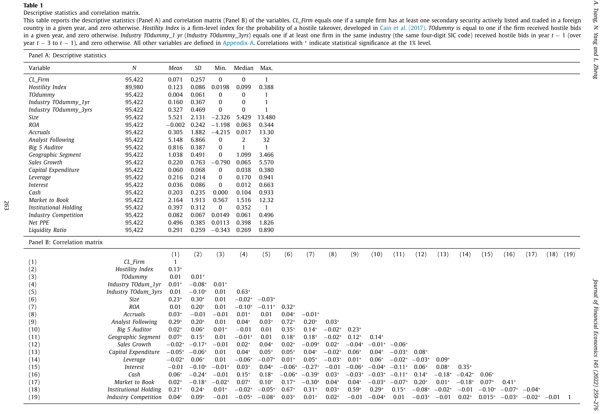
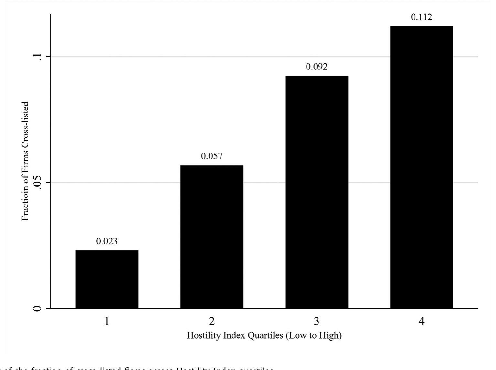
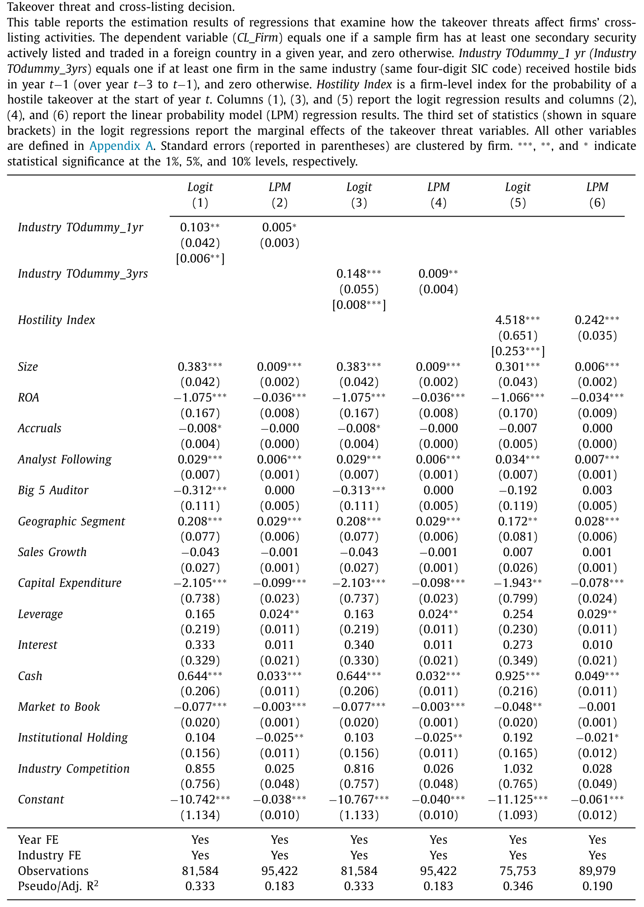
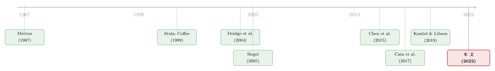

把股票挂到国外去，竟是一道防收购的「护城河」
本文读的是 Tsang, Yang & Zheng (2022, Journal of Financial Economics)：美国公司在面临敌意收购威胁时，更可能选择到国外去「跨境上市（cross-listing）」——而且偏偏挑那些会计准则与美国差异最大的东道国，因为这恰恰能把收购方的成本、复杂度与诉讼风险一并抬高。换句话说，把股票挂到国外，本身就是一件「全球反收购装置」。一个标准差的收购概率上升，会让跨境上市的概率提高约 2%（相当于样本均值的 29%）。
1 引言：公司为什么要把股票挂到国外去？
「一家美国公司，为什么要费尽周折跑到伦敦、东京或法兰克福去再上一次市？」——这是跨境上市文献几十年来反复追问的问题。
教科书给过好几个答案。最早是 Merton（1987）的「投资者认知（investor recognition）」：多挂一个交易所，就多一批知道你、愿意持有你的投资者，股东基础变宽，资本成本随之下降。接着是声势更大的「绑定假说（bonding hypothesis）」：Stulz（1999）、Coffee（1999）、Reese 与 Weisbach（2002）认为，一家来自弱投资者保护国家的公司，可以通过到美国上市，把自己「绑定」到更严格的法律与监管之下，以此向市场承诺「我不会盘剥小股东」；Siegel（2005）则补了一个「声誉绑定」的版本，强调中介机构的监督作用。
这些理论有一个共同点：它们都把跨境上市看成一件对小股东有利、对治理有益的好事——要么降低融资成本，要么强化外部约束。
但 Kastiel 与 Libson（2019）提出了一个味道完全不同的新动机：跨境上市，可能是管理层用来躲避敌意收购的工具。他们称之为「全球反收购装置（global antitakeover device）」，并给它起了个名字——绝缘假说（insulation hypothesis）。
这个猜想一抛出来就很扎眼。因为它把跨境上市从「治理的朋友」一下子推到了「公司控制权市场（market for corporate control）的对手」一边。要知道，敌意收购在公司治理里扮演的是「纪律执法者」的角色——管理层若不好好干，就有被人买下、被换掉的威胁（这一点的经典源头，可参见《现金为什么一定要「还」出去？——四十年后，重读 Jensen 的自由现金流》）。如果跨境上市真能让管理层躲开这把悬顶之剑，那它的经济含义就远不止「拓宽股东基础」那么温情了。
问题在于：Kastiel 与 Libson（2019）只是一个法学理论的猜想，没有大样本的实证证据。这篇论文要做的，就是把这个猜想拉到数据面前，认真地问一句：美国公司，真的会因为怕被收购，而跑去国外上市吗？
2 一个反直觉的机制：为什么「跨境」本身就是毒丸？
在动手之前，先得把这件事的逻辑讲通——为什么仅仅多挂一个国外交易所，就能挡住收购？
设想一个收购方要拿下一家在美国本土、同时又在国外挂牌的公司。它面前有两条路：
第一条路，两边一起要约。 如果收购方想在美国和国外两个交易所同时发出收购要约（tender offer），那它要面对的就不只是双倍的直接费用——本地律师、投行、会计师都要再请一套——更要命的是不同司法辖区之间会计规则、公司治理、监管要求的彼此冲突。复杂度、不确定性、潜在的诉讼风险，每一样都是真金白银的成本。而收购最讲究的就是速度：拖得越久，变数越大，目标公司越有时间布防。论文在附录 C 里专门讲了两个真实案例（比如 BHP Billiton 在 2007 年对同时挂牌于英、澳、美三地的 Rio Tinto 发起的敌意收购），来说明这种跨辖区的麻烦有多实在。
第二条路，只在本土收。 就算收购方放弃国外那部分、只在美国本土收购股份，跨境上市仍然给它使绊子：它抬高了收购方必须拿到的投票权比例。论文给了个很直观的算术——如果一家目标公司有 80% 的股份在本土交易所流通，那么收购方要拿到全体股东的多数支持，就得在本土股份里争取到超过 62%（50.1/80），而不是通常的 50.1%。换句话说，把一部分股票「藏」到国外，等于在本土筑高了门槛。
于是结论就清晰了：跨境上市抬高的，是收购方的成本。 而 Kastiel 与 Libson（2019）的一个关键推论是——既然成本来自「会计与监管规则的冲突」，那么东道国与美国的会计准则差异越大，这堵墙就越高。这一点后面会变成本文识别机制的关键一招。
这里有个值得停一下的反差：Chen 等（2015）发现，在没有反收购动机的情况下，会计准则的差异反而会让跨境上市变得不那么吸引人（要多花一笔适应成本）。所以，如果数据显示「面临收购威胁的公司偏偏奔着会计差异大的国家去」，那就只能用「想给收购方添堵」来解释——这恰恰是绝缘假说最有力的证据。
3 识别策略：从「相关」一步步逼近「因果」
论文的实证推进，是一条很标准、却走得很扎实的「层层加码」路线。我们一段段来看。
3.1 第一步：基准相关性
最朴素的检验，是看一家公司面临的敌意收购威胁，与它跨境上市的倾向之间是不是正相关。作者估计了如下面板回归：
$$CL\_Firm_{it} = \alpha + \beta_1\, TakeoverThreat_{it-1} + X_{it-1} + Industry\,FE + Year\,FE + e_{t}$$
其中 CL_Firm 是个虚拟变量：公司 \(i\) 在年份 \(t\) 至少有一只二级证券在国外交易所活跃挂牌交易，就取 1，否则取 0。核心解释变量 TakeoverThreat 用了三个代理：
Industry TOdummy_1yr：同一四位 SIC 行业里，过去一年内至少有一家公司收到敌意收购要约则取 1（跟随 Servaes 与 Tamayo, 2014；Billett 与 Xue, 2007）；Industry TOdummy_3yrs：把窗口放宽到过去三年（跟随 Agrawal 与 Knoeber, 1998 的做法）；Hostility Index：Cain 等（2017）开发的公司层面敌意收购概率指数——它用了五十年（1965–2014）的敌意收购数据和美国 17 部收购相关法律，跑一个稀有事件 logit 模型估出来。
注意所有威胁变量都取滞后一期（\(t-1\)），控制变量 \(X\) 也都滞后；模型加了行业和年份固定效应，标准误按公司聚类。这套设定本身只能说明「相关」，但它是后面所有故事的地基。
3.2 关键一步：用「东道国选择」锁定机制
如果故事到此为止，一个挑剔的读者立刻会反问：正相关又怎样？也许是行业并购浪潮在作祟——公司去国外上市，可能是为了寻找海外并购机会、或为国内并购吸引外资，而不是为了防守。
作者破解这个质疑的办法非常漂亮：看公司挑哪个国家去上市。 前面说过，绝缘效果来自会计规则的冲突，差异越大、墙越高。于是作者预测：当公司面临收购威胁时，它会更倾向于到那些会计准则与美国 GAAP 差异更大的国家去挂牌。 数据印证了这一点——而且正如前文的反差所言，这个方向只有反收购动机能解释（否则会计差异本该是个劝退因素）。这一招，把「相关」往「机制」上结结实实推了一步。
3.3 再一步：两个子样本的「成本—收益」检验
接着，作者用两个子样本进一步刻画反收购动机——本质上是在问「什么时候这件防御工具更划算」：
- 有海外业务的公司更可能用跨境上市来防守。Biddle 与 Saudagaran（1991）早就指出跨境上市本身成本不菲；而 Howson 与 Khanna（2014）认为，已经在海外做生意的公司，到当地上市能强化本地身份、信号长期承诺，且因为熟悉当地法规、已雇了当地会计师，上市成本更低。收益更高、成本更低，自然更愿意用。
- 全现金（all-cash）收购更可能出现时，公司反而更不依赖跨境上市。道理在于，跨境上市抬高的主要是换股交易的成本，对全现金要约的阻碍小得多。所以当市场环境更倾向全现金收购时，这件工具失了灵，公司也就不那么用它了。
这两个子样本结果还顺手堵了一个口子：如果有什么遗漏变量在驱动结果，那它必须同时解释横截面（哪些公司用）和时间维度（什么时候用）的变化，这就把「遗漏变量」的嫌疑压低了不少。
3.4 临门一脚：用「毒丸法」的州级错位采纳做三重差分
但相关性再多层，终究不是因果。论文最后的杀手锏，是利用美国各州敌意收购毒丸法（poison pill statutes and cases，简称 PP laws）的错位采纳（staggered adoption）——这份法律时间表同样取自 Cain 等（2017）。
逻辑是这样的：PP 法一旦在某州生效，就等于州政府免费送了当地公司一件反收购武器。如果公司本来就把跨境上市当反收购工具，而 PP 法是它的有效替代品，那么 PP 法通过之后，跨境上市的倾向就应该下降——尤其是对那些在立法前面临更高收购威胁的公司。
这就构成一个三重差分（triple-difference）：(是否处于 PP 法已生效的州) × (立法前收购威胁高低) × (立法前后)。作者发现，三重差分的估计强有力地支持了「反收购工具之间相互替代」的机制。更妙的是，作者还检验了：这个效应不太可能由「收购压力减轻后管理层更加堑壕化（managerial entrenchment）」来解释；同时做了平行趋势检验、控制了其他反收购法律——把这个准自然实验的可信度撑得相当稳。
这里要留个心眼：Karpoff 与 Wittry（2018）专门提醒过，州级反收购法这类「自然实验」的有效性高度依赖于立法当时的制度与法律背景。三重差分能在一定程度上吸收这些干扰（因为它比较的是「高威胁 vs 低威胁公司」在同一次立法前后的差异），但读者仍应把它当作「证据之一」而非铁证。
4 数据
样本搭建从 Chen 等（2015）的一份国际跨境上市数据库起步，覆盖 S&P Capital IQ（CIQ）里所有公司的境外股权挂牌信息。作者把「母国」定义为注册地，只保留注册在美国的公司——这样做能绕开国际样本里的国别与公司层面异质性，也让「绑定假说」相关的因素在样本里变得不那么相关（因为绑定主要适用于发展中国家公司去发达市场上市）。
- 数据源：跨境上市来自
CIQ；敌意收购活动来自Refinitiv Eikon（1987–2014）；公司财务来自Compustat；机构持股来自Thomson Reuters。 - 样本期：
1990–2015（CIQ 上 1990 年前的跨境上市极少，而 Hostility Index 只到 2014）。 - 筛选：剔除 OTC（粉单、OTC 公告板、德意志交易所、挪威 OTC 等披露要求过低的市场）；剔除金融业（SIC 6000–6999）与公用事业（SIC 4900–4999）；只保留转移完整控制权（收购≥50%）的已完成或撤回的美国上市目标公司交易。
- 样本量：最终
95,422个公司—年观测，其中6,772个为跨境上市，对应846家公司。
描述统计里有几个数字值得记住：样本中 7.1% 的公司—年至少有一只证券在国外活跃挂牌；只有 0.4% 当年经历过敌意收购尝试；16%（32.7%）的观测在同一四位 SIC 行业里、过去一年（三年）内有同行被敌意收购。Hostility Index 的均值是 0.123，标准差 0.086。

Table 1: A
5 主要结果
先看一张最直观的图。作者把样本按 Hostility Index 的值分成四个分位组——第 1 组收购概率最低，第 4 组最高——再画出每组里跨境上市公司的比例。

Figure 1: Bar chart of the fraction of cross-listed firms across Hostility Index quartiles
如图 1 所示，跨境上市的比例随着敌意收购威胁单调上升，且相邻两组之间的差异都在 1% 水平上显著。这就是整篇论文的「第一眼证据」：威胁越大，越多公司挂到国外去。
回归把这张图量化了。基准结果见表 2：作者对三个威胁代理分别跑了 logit（第 1、3、5 列）和线性概率模型 LPM（第 2、4、6 列）。核心数字是：
- 行业层面：如果同行业在过去一年经历过控制权威胁，公司跨境上市的概率提高
0.6%，约为样本均值（7.1%）的8.45%；放宽到过去三年则提高0.8%，约为均值的11.27%。LPM 给出0.5%–0.9%的一致结果。 - 公司层面：
Hostility Index每上升一个标准差（0.086），跨境上市概率约提高2.08%（\(0.242 \times 0.086\)），相当于样本均值的29.3%。

Table 2
这是一个经济上很可观的量级——近三成的相对效应，绝不是统计上勉强显著的小数点游戏。
控制变量也讲出了一个有意思的副线索：美国公司的跨境上市倾向随现金更多、资本开支更少而上升。这跟「为融资需求而上市」的传统叙事相反（Lins 等, 2005 在研究外国公司来美上市时发现的是另一个方向）。作者据此判断：在控制了其他因素后，美国公司的境外上市，不太像是被融资需求驱动的——这又从侧面给「反收购动机」腾出了空间。
至于「会不会是行业并购浪潮在作祟」的担忧，作者在在线附录里控制了同行业的收购方数量，结论依旧成立，且收购方数量的系数并不显著——并购浪潮不是答案。
6 文献脉络
把这篇论文放回它所在的谱系里看，会更清楚它的位置。
第一条线，是跨境上市的动机之争。 从 Merton（1987）的投资者认知，到 Stulz（1999）、Coffee（1999）、Reese 与 Weisbach（2002）的法律绑定，再到 Doidge、Karolyi 与 Stulz（2004）用「为什么在美上市的外国公司更值钱」给绑定假说提供证据，以及 Siegel（2005）的声誉绑定——这条线几十年来讲的都是「跨境上市如何改善公司价值与治理」。本文反其道而行：它检验的是一个让治理「打折」的新动机，绝缘假说。
第二条线，是「公司用什么工具防收购」。 Rauh（2006）发现员工固定缴款计划里持有本公司股票能降低被收购概率；Billett 与 Xue（2007）证明公开市场回购能吓退收购方；Bebchuk 等（2009）与 Karpoff、Schonlau 与 Wehrly（2017）则表明公司层面的反收购条款会压低被收购的可能。本文给这份「反收购工具清单」添了一个全新的成员——跨境上市。
而把这两条线接到一起的扳手，是 Cain 等（2017）。 正是他们用五十年敌意收购数据造出的 Hostility Index 和那份各州收购法的时间表，让本文既能在公司层面度量「威胁」，又能借毒丸法的错位采纳做出准自然实验。理论上的源头则是 Kastiel 与 Libson（2019）——本文，是第一篇为这个法学猜想提供大样本实证证据的工作。

7 评论与延伸（Q&A + 研究方向）
(a) 几个可能的疑问
Q：绝缘假说和传统的「绑定假说」到底是不是一回事的两种说法？
不是，方向恰好相反。绑定假说说的是「公司主动把自己绑到更严的监管下，以此讨好小股东、降低代理成本」；绝缘假说说的是「公司利用跨辖区监管的彼此冲突，给收购方添堵，从而削弱外部治理约束」。前者把跨境上市当治理的朋友，后者当公司控制权市场的对手。本文聚焦美国公司，正是因为绑定动机在这个样本里相对不相关，绝缘动机才更容易被识别出来。
Q：这会不会其实是「管理层堑壕化」的故事——老板为了保住位子才去国外上市？
这正是最该担心的替代解释。作者的回应是：三重差分显示，PP 法生效（即收购压力外生下降）后，跨境上市倾向随之下降，而且证据不支持「收购压力减轻后管理层更堑壕化」这一通道。换言之，公司是在对收购威胁做出反应，而不是单纯地在加固自己的位子。当然，这两者在现实里很难完全切割开。
Q：基准回归只是相关性，凭什么相信是因果？
单看表 2 确实只是条件相关。论文的因果说服力是层层叠加出来的：东道国会计差异的机制检验排除了「并购浪潮」等动机，两个子样本（海外业务、全现金要约）让遗漏变量必须同时解释横截面与时序变化，最后毒丸法的三重差分提供了外生冲击。任何单独一块都不够硬，但合在一起就相当有分量。
Q：为什么挑会计准则差异，而不是法律或语言差异？
因为机制要求的是「抬高收购方的合规与冲突成本」，而会计规则差异是这类成本里最可量化、最直接的一维（参见 Nobes, 2001 的国别会计准则基准）。更关键的是它能区分两个假说：在没有反收购动机时，会计差异（Chen 等, 2015）反而劝退跨境上市；一旦观察到「威胁越大、越往会计差异大的国家跑」，就只剩反收购能解释了。
Q：为什么全现金收购反而让这件工具失效？
因为跨境上市抬高的主要是换股交易的执行成本（要同时摆平两边的证券发行、披露、会计衔接）。全现金要约里收购方直接掏钱买股份，跨辖区的换股麻烦绕开了大半，这堵墙自然矮了。所以当市场更倾向全现金收购时，公司也就不爱用跨境上市来防守了——这是个很干净的「边界条件」检验。
Q：把样本限定在美国公司，会不会牺牲了外部有效性？
会有一点取舍。好处是干净——绕开了国别与公司层面的异质性，也让绑定假说这个最大竞争解释在样本里失去用武之地（绑定主要适用于弱保护国公司去强保护国上市），同时美国有一个活跃、且时序与横截面变化都很大的公司控制权市场，统计功效足。代价是结论能否推广到「外国公司」的跨境上市行为，仍需另行检验。
(b) 几个可能的研究问题与提案
1. 跨境上市的「绝缘」效果，会不会传导到公司的债务与信用利差？
【经济故事】如果跨境上市真能降低被收购概率，那么对债权人是好是坏并不显然：一方面收购威胁减弱意味着控制权变更引发的「债务加速到期/被剥离」风险下降，利差或许收窄；另一方面外部治理弱化、代理成本上升，又可能推高信用风险。两股力量打架，净效应是个实证问题。 【可行性】中。需要把本文的跨境上市样本与
TRACE公司债交易数据、评级数据合并，用同样的 PP 法三重差分识别。难点在于发债的美国跨境上市公司样本可能偏小，需要仔细处理选择问题。
2. 外资机构持有人，是绝缘效果的「放大器」还是「制衡者」？
【经济故事】一家公司在国外挂牌后，会吸引东道国的机构投资者。这些外资持有人究竟是和管理层站在一起（享受绝缘带来的稳定、乐于长期持有），还是反过来要求更强的治理？本文用的是
CL_Firm这个粗粒度的挂牌虚拟变量，没有打开「谁在持有」这一层。 【可行性】中。Thomson Reuters（本文已用）和FactSet的机构持股数据可按持有人国别拆分。识别上可借本文的毒丸法实验，看外资持股比例如何调节跨境上市对收购概率的影响。这与外资持有人、流动性的研究脉络天然契合。
3. 被「绝缘」起来的公司，长期的真实经营表现如何？
【经济故事】反收购工具的经典争议是：它到底保护了「专注长期投资的管理层」，还是「庸碌自利的管理层」？如果跨境上市绝缘后，公司投资、创新、ROA 系统性变差，那它更像堑壕化；若长期投资反而上升，则支持「保护长期主义」一说。 【可行性】高。本文样本已含
Compustat财务，只需在三重差分框架里把因变量换成投资、研发、长期业绩，做事件研究式的动态效应。数据现成，识别策略可直接沿用，是最 doable 的一个方向。
4. 跨境上市与其他反收购工具之间，是替代还是互补？
【经济故事】本文已用 PP 法做了「替代品」的证据。但回购（Billett 与 Xue, 2007）、毒丸条款、交错董事会等工具与跨境上市之间的关系可能更复杂——有的公司也许「全都要」，把跨境上市作为治理结构的一块拼图。理清这张「替代/互补图谱」，对理解公司如何组合防御手段很有价值。 【可行性】中。需要把
ISS/SharkRepellent的公司层面反收购条款数据与本文样本合并，做工具之间的条件相关与动态采纳分析。识别因果较难，更可能产出的是一组有说服力的相关性事实。
8 我的判断
这篇论文最让我欣赏的，是它把一个法学猜想，翻译成了一条可以被数据反驳的实证链，而且每一环都对得很巧。尤其是「东道国会计差异」那一招——用 Chen 等（2015）的反向预测做对照，让「反收购」成为唯一能自洽的解释——这是全文最聪明的设计，比任何一个回归系数都更有说服力。三重差分的毒丸法实验，则把因果的门槛又抬高了一截。
要说对识别的担忧，我有两点。其一，州级反收购法的「自然实验」属性近年备受推敲（Karpoff 与 Wittry, 2018），三重差分虽能吸收不少背景干扰，但「立法前高威胁 vs 低威胁公司」的可比性仍值得更多平行趋势的展示。其二，CL_Firm 是个相当粗的二元变量——它不区分挂牌的规模、活跃度、是主动发行还是被动存托，而「绝缘强度」理应随这些维度变化；把因变量做得更细，结论会更有层次。
后续我最想看到的，是绝缘效果的「下游」：被保护起来之后，这些公司的债务定价、外资持有人结构、长期投资究竟走向何方？这恰是把这篇「为什么上市」的文章，接到公司债与外资持有人那条线上的自然延伸——也是上面三个提案真正的份量所在。
参考文献
- Bebchuk, L., Cohen, A., Ferrell, A. (2009). What matters in corporate governance? Review of Financial Studies 22(2), 783–827.
- Biddle, G.C., Saudagaran, S.M. (1991). Foreign stock listings: benefits, costs, and the accounting policy dilemma. Accounting Horizons 5, 69–80.
- Billett, M.T., Xue, H. (2007). The takeover deterrent effect of open market share repurchases. Journal of Finance 62, 1827–1850.
- Cain, M.D., McKeon, S.B., Solomon, S.D. (2017). Do takeover laws matter? Evidence from five decades of hostile takeovers. Journal of Financial Economics 124, 464–485.
- Chen, L., Ng, J., Tsang, A. (2015). The effect of mandatory IFRS adoption on international cross-listings. Accounting Review 90, 1395–1435.
- Coffee Jr, J.C. (1999). The future as history: the prospects for global convergence in corporate governance and its implications. Northwestern University Law Review 93, 641–707.
- Doidge, C., Karolyi, G.A., Stulz, R.M. (2004). Why are foreign firms listed in the U.S. worth more? Journal of Financial Economics 71, 205–238.
- Howson, N.C., Khanna, V.S. (2014). Reverse cross-listings—the coming race to list in emerging markets and an enhanced understanding of classical bonding. Cornell International Law Journal 47, 607–629.
- Karpoff, J.M., Schonlau, R.J., Wehrly, E.W. (2017). Do takeover defense indices measure takeover deterrence? Review of Financial Studies 30, 2359–2412.
- Karpoff, J.M., Wittry, M.D. (2018). Institutional and legal context in natural experiments: the case of state antitakeover laws. Journal of Finance 73, 657–714.
- Kastiel, K., Libson, A. (2019). Global antitakeover devices. Yale Journal on Regulation 36, 117–164.
- Lins, K.V., Strickland, D., Zenner, M. (2005). Do non-U.S. firms issue equity on U.S. stock exchanges to relax capital constraints? Journal of Financial and Quantitative Analysis 40, 109–133.
- Merton, R.C. (1987). A simple model of capital market equilibrium with incomplete information. Journal of Finance 42, 483–510.
- Rauh, J.D. (2006). Own company stock in defined contribution pension plans: a takeover defense? Journal of Financial Economics 81, 379–410.
- Reese, W., Weisbach, M. (2002). Protection of minority shareholder interests, cross-listings in the United States, and subsequent equity offerings. Journal of Financial Economics 66, 65–104.
- Servaes, H., Tamayo, A. (2014). How do industry peers respond to control threats? Management Science 60, 380–399.
- Siegel, J. (2005). Can foreign firms bond themselves effectively by renting U.S. securities laws? Journal of Financial Economics 75, 319–359.
- Stulz, R.M. (1999). Globalization of equity markets and the cost of capital. NBER Working Paper.
- Tsang, A., Yang, N., Zheng, L. (2022). Cross-listings, antitakeover defenses, and the insulation hypothesis. Journal of Financial Economics 145(1), 259–276.